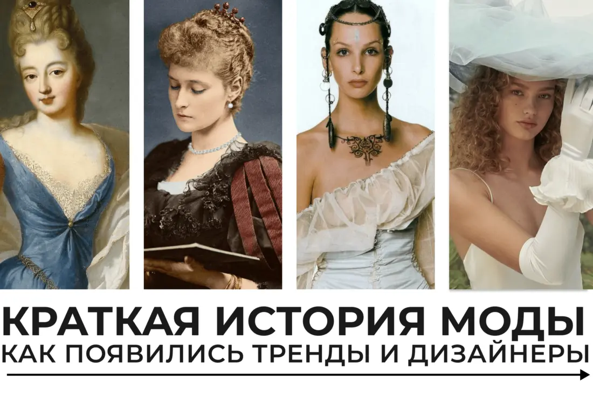
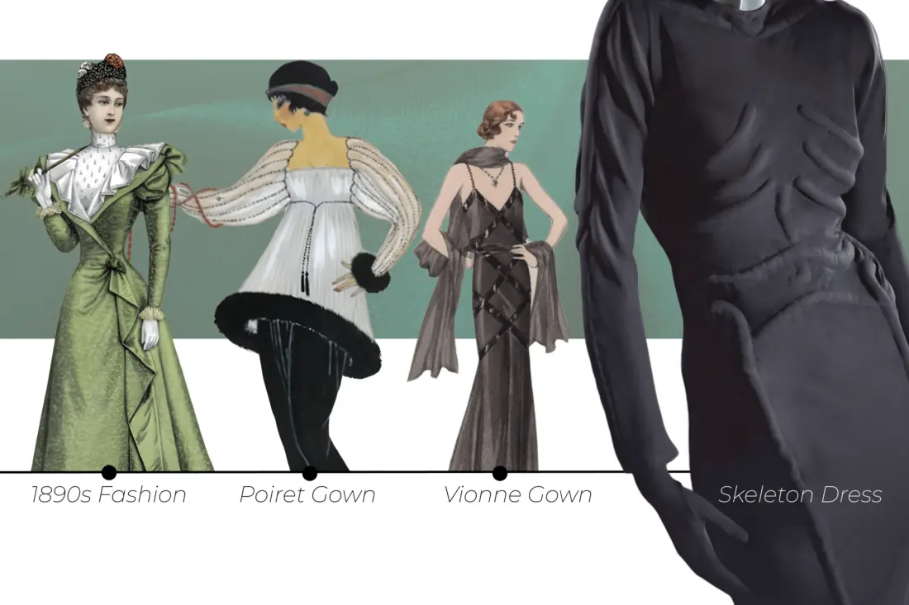
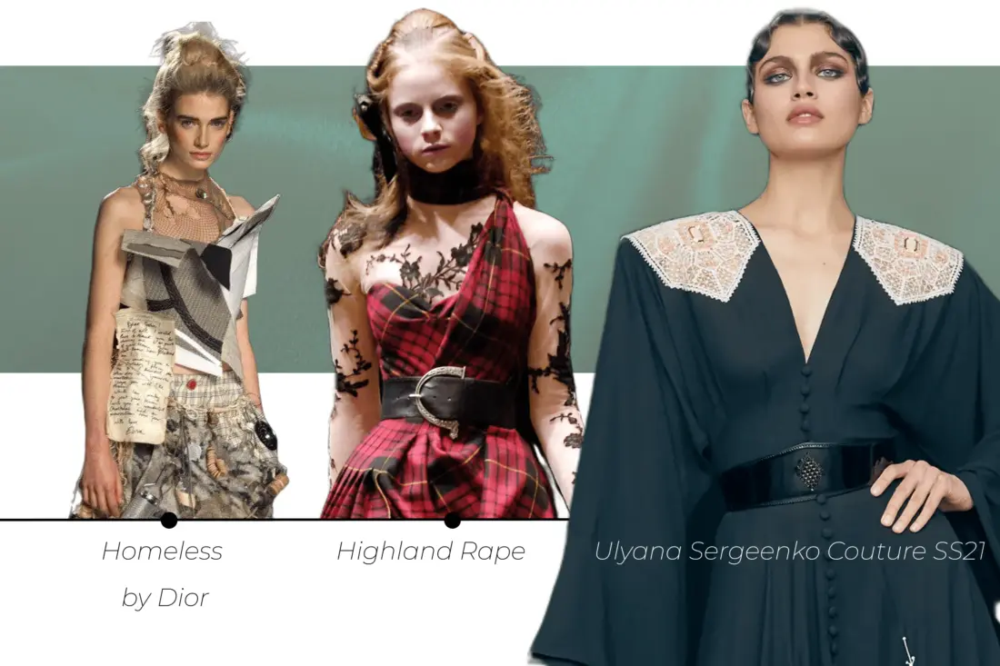

Стиль и мода интересовали людей еще во времена, когда появилось колесо. Но тогда красивая одежда была доступна только элите, а модельеры работали на избранных.
Ситуация медленно и верно менялась. Разбираю, как именно, и заодно рассказываю, как выстраивалась история возникновения моды.
Откуда взялся термин «мода»
В русский язык слово ввел Петр I, а означает оно «мера». Сам термин с латинскими корнями, но мы его позаимствовали у французов — ведь в XVIII веке именно они были законодателями стиля.
Вообще мода как таковая появилась благодаря знати. Одежда и внешний вид помогали понять, к какому социальному слою относится человек и насколько он богат. А аристократы во все времена старались соответствовать правителям.
Некоторые считают, что мода как явление появилась в XII–XIII веках: тогда средний класс пытался подражать высшему. Другие полагают, что она существовала во все времена.
Как портные превратились в модельеров
До середины 1700-х они работали напрямую на богатых персон и помогали им реализовывать идеи. Но некоторые уже тогда задавали тренды.
Так, одной из первых французских модельеров можно назвать Розу Бертен. Девушка всю жизнь занималась шитьем одежды и в 1770-м открыла в центре Парижа магазин Le Grand Mogol. Там закупались фрейлины Марии-Антуанетты, а позже и сама королева стала сотрудничать с Бертен.
На каждый наряд от французской кутюрье королева тратила не меньше тысячи ливров — настолько роскошными они были. В пересчете на курс рубля XVIII века Мария-Антуанетта тратила на один наряд 7–8 годовых зарплат мануфактурного рабочего.
Бертен называют одним из первых модельеров не потому, что та сотрудничала с королевой. Девушка не разбрасывалась гонорарами, а расширяла производство и работала примерно так же, как и современные дизайнеры. А именно заготавливала небольшую коллекцию одежды и согласовывала ее с заказчицей.
А вот первым представителем высокой моды в самом прямом смысле слова считают Чарльза Фредерика Уорта. В 1858-м он основал бренд House of Worth. Уорт готовил несколько дизайнов одних и тех же вещей для каждого сезона и демонстрировал наряды на живых моделях. Да, совсем так же, как делают современные мастера во время Недель моды.
Откуда люди узнавали о трендах раньше
Долгое время через тех, кто мог путешествовать. А сами тренды диктовались правителями государств. Тот же Петр I, вдохновившись европейскими нарядами, запретил русской знати брить бороды и одеваться на старорусский манер. Мужская мода, как и женская, практически полностью копировала западные традиции того времени.
При этом уже в XVI веке существовали первые прообразы глянца. Испанские книгопечатники выпускали издания с рисунками модной одежды. Только вот проблема была в том, что за время, пока в тираж выходила новая партия книг, тренды менялись. А, да, слово «тренд» тогда не использовалось в связке с модой. Его позаимствуют маркетологи у экономистов через сотни лет.
Идем дальше: владельцы ателье придумали одевать в костюмы Пандор — восковых кукол в 2–4 раза меньше обычного человека. Пандоры побольше выставлялись на витринах, а крошечные версии отдавались портным, чтобы те копировали дизайн одежды для заказчика.
В 1672 году вышел первый выпуск Le Mercure Galant — французского периодического издания о светской жизни. Тут публиковались рассказы о событиях, литературные произведения и, конечно, иллюстрации модных костюмов.
Дальше журналы мод появлялись по всей Европе. В Германии выходил Journal des Luxus und der Moden, в Великобритании The Lady's Magazine, в России — «Модное ежемесячное издание, или Библиотека для дамского туалета».
Привычный нам глянец появился чуть позже — разве что все еще на бумаге без блестящего покрытия. В 1867-м вышел первый номер Harper’s Bazaar, в 1886-м — Cosmopolitan, а в 1892-м — Vogue.
История развития моды в XX веке
До начала столетия женщины носили платья с небольшими турнюрами — подушечками, визуально увеличивающими бедра. В тренде были платья S-образного силуэта. А еще модницы любили шляпы с перьями и массивные аксессуары. Над этой тенденцией даже подшучивали писатели того времени. Например, Чехов отмечал, что с такими темпами женщины однажды начнут украшать головные уборы лошадиными хвостами, а брошки — буферными фонарями.
Но ближе к 1890-м прогрессивные любительницы одежды переоделись в английские костюмы «тайер». Они состояли из расклешенной юбки и короткого жакета поверх блузки. Часто костюмы «тайер» дополняли рубашкой с мужского плеча — эмансипе бы одобрили.
А потом, уже в XX веке, женщины начали отказываться от корсетов. Считается, что освободителем от неудобного белья стал модельер Поль Пуаре. Но, кроме него, было еще несколько человек, изменивших тренды. Например, французская дизайнер Мадлен Вионне. Она отмечала, что именно с ее подачи модное сообщество отказалось от неудобного белья.
При этом утягивающая одежда не исчезла насовсем — просто ее стали использовать для уменьшения бедер, а не талии. И все же как раз в начале XX века женщины постепенно обратили внимание на бюстгальтер. Повседневная одежда тоже стала более удобной: появились платья-флэппер с прямым силуэтом и заниженной талией.

Дальше больше: в 1910–1920-е начали создавать свои костюмы Коко Шанель и Эльза Скиапарелли. Первая модельер подарила женщинам брючные круизные костюмы, а вторая запустила то, что мы сейчас называем коллаборациями. Скиапарелли сотрудничала с Сальвадором Дали, а затем и с Жаном Кокто. В итоге, вышли культовые платье-лобстер, платье-скелетон, шляпа-туфля, пальто с картиной вместо привычного принта.
К 1940-м женщинам пришлось отказаться от вычурной одежды — сказались дефицит материалов и общий депрессивный настрой на фоне Второй мировой войны. А потом пришел Кристиан Диор и дал модницам то, о чем те давно мечтали — возможность побыть нежными созданиями, достойными красоты. За ним в этом же направлении последовали Кристобаль Баленсиага, Юбер де Живанши, Пьер Бальмен.
Брендов становилось все больше, локация модной столицы все время менялась. Например, до 1950-х это был Париж. А потом — Лондон, хотя и во Франции продолжали творить культовые дизайнеры. Но главное, маркетологи и модельеры позаимствовали у экономистов важное слово, которое мы используем до сих пор — тренд.
Бренды, хоть и не любили отходить от традиций, понимали: нужно наблюдать за изменениями в обществе, чтобы одежда была востребованной. Так появились трендвотчеры. Это аналитики, которые следят за сигналами, а те намекают на новые тенденции.
А еще модные дома стали делать все, чтобы выделиться среди конкурентов. Если раньше экспериментировали единицы — вроде той же Эльзы Скиапарелли, то ближе к концу XX века выходил за рамки каждый уважающий себя бренд.
Как изменилась мода сегодня
Одежда и без того отражала, в какой среде живет человек и что за проблемы его интересуют. А ближе к XXI веку она нужны была для того, чтобы высказаться о социальных проблемах и даже переосмыслить прошлое. Например, Александр Маккуин посвятил коллекцию Highland Rape этническим чисткам в Шотландии, которые проводились в XVIII и XIX столетиях. А Джон Гальяно выпустил «изодранные» вещи — так он хотел обратить внимание масс на проблему бездомности.

Впрочем, есть и те, кто не эпатирует публику, но продвигает с помощью показов традиции. Так, дизайнер Ульяна Сергеенко приглашает к сотрудничеству мастеров со всей России. А в ее работах используются елецкое кружево, ростовская финифть, ручная вышивка и многие другие приемы из прошлого.
Словом, современная мода хаотична. Одни дизайнеры эпатируют ради репостов в соцсетях, другие поднимают по-настоящему важные темы. Кто-то, как Balenciaga, насмехается над миром высокой моды и выпускает дорогие вещи, которые выглядят дешево. А кто-то превращает показ в перформанс — совсем как Coperni.
Современная мода критикуется — хотя бы из-за бесконечной вереницы Фэшн-недель. Зарубежные аналитики склоняются к тому, что так крупные бренды вносят вклад в кризис перепроизводства.
Но все же есть немало тех, кто искренне любит моду — и не только из-за необычных дизайнов. Коллекции дизайнеров можно сравнить с работами художников. И в каждой преданные ценители находят намеки на то, что модельер вдохновился важной для общества темой, устал и выгорел, влюбился — или подметил другие перемены в жизни.